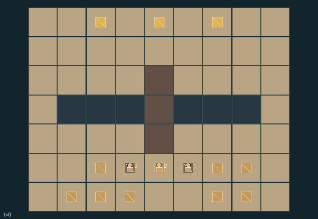

GI194 · Windlift Quarry

Deliver all six individually owned ore blocks to their matching top-row depots while choosing between shared lift service and long edge ramps.
Identity and original contract
3 independently actionable roles; 12 discrete commands per role; 186 native observation columns per role; original horizon 160 steps. Declared per-step reward range: -1 to 6. Observation regime: fully_observable.
Source SHA-256: 79a0391fc40375d7876f2cfba3ebc356fc89e3a8390b4d8f87607b1e1ef1da36
The objective, rewards, population, map and horizon remain original. A preview is not a success claim.
Objective and gameplay
Deliver all six individually owned ore blocks to their matching top-row depots while choosing between shared lift service and long edge ramps.
A socketed counterweight, simultaneous crank/brake, occupied destination and rope budget determine whether another worker and their physical cargo can travel; weight sale and owner-specific delivery rewards create competing uses.
- Ore, weight and kit are real movable blocks; pick/drop works on your cell.
- Role 0 cranks at (3,5), while role 1 brakes at (5,5). Both actions must occur together to launch.
- At the brake, socket a held counterweight or retrieve one with empty hands.
- Lift load includes its rider and all cargo aboard. Launch requires a positive counterweight and mass difference at most two.
- A launch consumes 1 + mass difference rope units; each following tick moves the platform one cell toward its other dock.
- Workers cannot leave a moving platform. Its arrival cell is reserved; occupied arrival docks prevent launch.
- Walk along x=0 or x=8 to bypass the chasm. A rope kit near a control restores up to three wear units.
- Deliver each ore block at its owner's depot. Selling a weight benefits its owner but removes shared lifting capacity.
Ending: All six ore blocks have been delivered. There is no early loss terminal: depleted or unavailable lift service still leaves the physical edge ramps.
What this game explores
Resource commons & externalities: An action changes a persistent resource or burden that another role also encounters. Compare extraction with maintenance and record the downstream resource trajectory.
Complementary production & service: A useful outcome requires ordered stages, scarce equipment or another role's capability. Measure real completed products and resource circulation rather than counting intermediate actions as success.
Joint transport & shared access: Positions, load geometry, occupancy and persistent access constrain whose action can succeed next. Distinguish physical handoff, shared controls and simultaneous force from a cosmetic cooperation label.
These are questions supported by rule structure, not observed learning effects.
Play it: operating walkthrough
crucibles play --game gi194Keep Python running and open its printed address. Select this game, set a seed and press Create session. The game itself is always English.
Assign a role range to Host with Assign / take over, or Assign all roles. Invite a second participant with Create player invitation, then assign a disjoint subset. Every original role is available.
For every owned role choose a legal command and press Queue. Arrow keys / WASD queue a declared directional action for the current role camera when available. Space or Advance one joint step advances everyone together. Non-directional games use the selectors.
Unqueued roles use the labelled untrained uniform-legal policy. Take over or release roles before the next step without resetting. Full-state debug is privileged and permanently logged; role cameras preserve permissions. Close the session to retain logs. Server restart does not restore sessions.
Complete command reference
IDs and English labels exactly match the manifest. Availability depends on role, resources, location and phase. An available action can still have no productive effect.
0·Wait
1·North
2·East
3·South
4·West
5·Pick up loose block on own cell
6·Drop held block on own cell
7·Crank: role 0 at crank, hands empty
8·Brake: role 1 at brake, hands empty
9·Socket held weight or retrieve a socketed weight at brake
10·Deliver ore or sell weight at its owner's depot
11·Patch rope using held kit within one cell of a control
Roles and capability identifiers
These original role names describe capabilities, not interchangeable skins. Check each owned role's legal selector before planning handoffs.
agent_0·Crank keeper and owner 0
agent_1·Brake keeper and owner 1
agent_2·Mobile courier and owner 2
Information and observation permissions
Fully observable. Every policy receives its role one-hot and all dynamic/game-relevant public state leaves listed by obs_keys, including the complete tile map, object status, carrier, owner, load mass, controls, platform, rope, depots and events. All active entities are visible to all roles; inactive consumed/delivered block coordinates remain in the public observation for accounting. Rendering uses the same state and cannot add information.
The GIF is full-state debug and may reveal hidden entities or private state. Train on obs[agent], not the picture, state tree or another role's private row. Field slices and visibility are in the original manifest.
Reinforcement-learning integration
import jax
from crucibles_jaxmarl import make
env = make("gi194")
key = jax.random.PRNGKey(0)
key, rk, ak, sk = jax.random.split(key, 4)
obs, state = jax.jit(env.reset)(rk)
actions = env.sample_actions(ak, state)
obs, state, rewards, dones, info = jax.jit(env.step_env)(sk, state, actions)
done = dones["__all__"]Observations are float32 vectors of width 186; actions are scalar int32; masks have 12 entries. Supply all 3 roles each transition. Masked sampling is an engineering reference, not a trained learner.
step_env retains terminal data without reset. step performs outer autoreset and keeps terminal data in info["raw_state"] and info["raw_observation"]. Use dones["__all__"] for episode boundaries; separate completion, failure and time limit in analysis.
JIT or vmap equal identities and shapes. Split independent reset, policy and transition keys. Group different shapes explicitly; do not shrink the population or horizon. Host rendering stays outside training.
Training questions and fair evaluation
Define valid completion from the objective before fitting. Preserve original rewards and also report real deliveries/services, losses, resource state, unresolved episodes and per-role returns. Animation is not a reward signal.
An action changes a persistent resource or burden that another role also encounters. Compare extraction with maintenance and record the downstream resource trajectory.
A useful outcome requires ordered stages, scarce equipment or another role's capability. Measure real completed products and resource circulation rather than counting intermediate actions as success.
Positions, load geometry, occupancy and persistent access constrain whose action can succeed next. Distinguish physical handoff, shared controls and simultaneous force from a cosmetic cooperation label.
Compare memory, communication or centralized critics under matched actor information. Declare critic access; keep actor inputs role-filtered. Match partner/opponent distributions, masks, compute and checkpoint selection. Final tests never enter fitting or selection.
Independent training runs or source-pairing blocks are inferential units; episodes from one policy are not independent training replications. Save hashes, keys, versions, device, time and cost. Negative, zero, failed and indeterminate outcomes are valid. No trained checkpoint or target score is supplied.
Classification and evidence
Overlapping editorial labels are reading aids, not proof of novelty, difficulty, strategic equivalence or learning effects.
- Resource commons & externalities
- Evidence
manifest.task.objective: Deliver all six individually owned ore blocks to their matching top-row depots while choosing between shared lift service and long edge ramps.
- Complementary production & service
- Evidence
manifest.task.objective: Deliver all six individually owned ore blocks to their matching top-row depots while choosing between shared lift service and long edge ramps.
- Joint transport & shared access
- Evidence
manifest.task.objective: Deliver all six individually owned ore blocks to their matching top-row depots while choosing between shared lift service and long edge ramps.
- Evidence
manifest.task.interaction: A socketed counterweight, simultaneous crank/brake, occupied destination and rope budget determine whether another worker and their physical cargo can travel; weight sale and owner-specific delivery rewards create competing uses.
- Evidence
manifest.task.observation_access: Fully observable. Every policy receives its role one-hot and all dynamic/game-relevant public state leaves listed by obs_keys, including the complete tile map, object status, carrier, owner, load mass, controls, platform, rope, depots and events. All active entities are visible to all roles; inactive consumed/delivered block coordinates remain in the public observation for accounting. Rendering uses the same state and cannot add information.
Source, receipts and preview limits
The world-only English GIF replays saved untrained legal actions through the original kernel. At most 25 actual endpoints include initial and terminal state; no invented interpolation. It is full-state debug, not the role observation.
Original source, observation slices, manifest and mechanism
Native receipt · Presentation receipt
Engineering passes do not establish learning. Nonzero floating differences remain recorded and undetermined; no new tolerance was introduced. Human scores remain unverified.